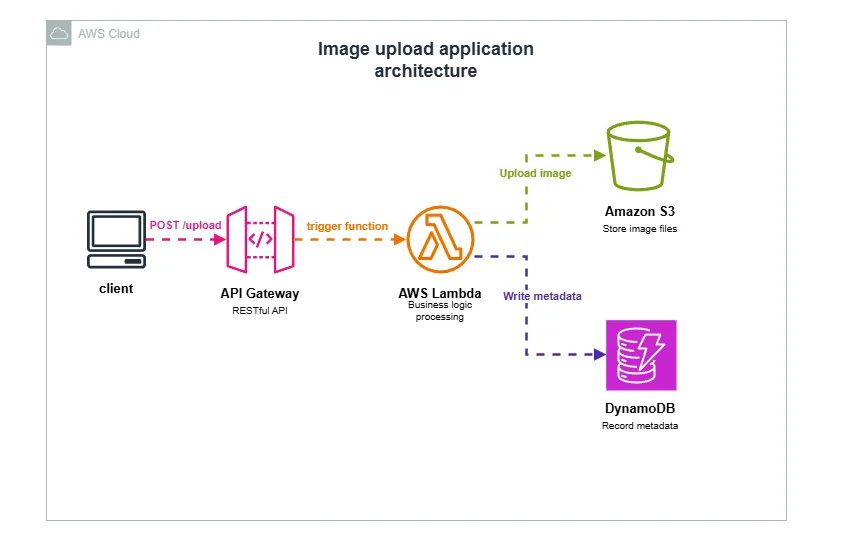

Practical AWS experience
Cloud projects
Architecture, implementation, and lessons from building on AWS.
Static Website Hosting on AWS S3 with CloudFront and Route 53
This project demonstrates the delivery of a static website using key AWS services for scalability, security, and cost efficiency. The website’s HTML, CSS, and JavaScript files are stored in an Amazon S3 bucket, configured for static website hosting.
To ensure fast global delivery and HTTPS security, Amazon CloudFront serves as a content delivery network (CDN), caching content closer to users. A custom domain managed through Amazon Route 53 provides reliable DNS routing and domain name management.
This setup highlights best practices for serverless web hosting, offering high availability, low latency, and minimal maintenance — ideal for portfolio sites, company landing pages, or documentation platforms.
Key AWS Services Used:
- Amazon S3
- Amazon CloudFront
- Amazon Route 53
- AWS Identity and Access Management (IAM)

Hybrid Cloud Migration: On-Prem NFS to AWS
This project showcases my ability to design and implement a secure, hybrid cloud storage architecture that migrates on-premises NFS workloads to AWS with minimal disruption. Leveraging AWS DataSync, AWS Storage Gateway, Amazon S3, and Amazon EC2, I architected a solution that ensures data integrity, scalability, and continued hybrid access during transition. It demonstrates my capability to translate business requirements into resilient cloud architectures, apply security best practices using IAM and monitoring, and design migration strategies aligned with real-world enterprise modernization goals.

Three-Tier Web Application Architecture on AWS
This project showcases the design of a highly available, fault-tolerant, and secure three-tier web application hosted on AWS. The architecture follows best practices for scalability and resilience, separating the system into presentation, application, and database layers to ensure efficient performance and maintainability.

Cloud-hosted Moodle LMS
I designed and deployed a cloud-hosted Moodle Learning Management System (LMS) on AWS using Terraform. The project demonstrates how an educational institution or training organization can host an online learning platform in the cloud while separating the application and database layers and applying secure AWS networking practices.

EduCloud Guard — AWS Cloud Governance & Security
I built EduCloud Guard to automate governance, security, and cost checks for a simulated university AWS environment. Daily Lambda scans identify missing tags, unapproved departments, public SSH and RDP access, and unattached EBS volumes.
Terraform provisions the infrastructure, DynamoDB tracks findings through their lifecycle, and SNS alerts highlight high-severity issues. A centralized dashboard provides filters, finding history, and remediation guidance without exposing AWS credentials in the browser.
Serverless Photo Upload Application
Planned project — case study in progress.
This project demonstrates a serverless photo upload application built on AWS using managed services to create a scalable and cost-efficient solution. Users can upload photos through a simple web interface, with files stored securely in Amazon S3 and processed automatically using AWS Lambda functions. The application uses API Gateway to handle requests and integrates with additional services for authentication, storage, and monitoring. This project highlights my understanding of serverless architecture, event-driven processing, and building modern cloud-native applications without managing servers.
